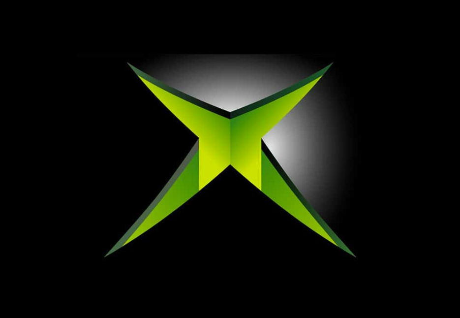

So, you are intrested in an original xbox HDD upgrade tutorial. You are in the right place. First of all you want to buy a second hard drive.Don't go buying any random HD though. You have to look up online if that hard drive locks to an original xbox, and the max size that the original xbox can handle when its softmodded is I believe 2tb. A 1tb western digital drive worked for me. Also you will need a 40 pin IDE to Sata converter if you are using a sata drive. Additionally you may need a new IDE cable. I needed one, but i've see people do it without it.
Open up your original xbox and make sure that the top part of the casing is off. Now turn on your xbox and enter chimp. (If not installed do so from rock5's softmodding extras disc) Once in chimp when prompted disconnect the IDE cable from the disk drive and make sure the second hard drive is set to slave and attach it via the cable from the disc drive, doing so while the xbox is powered on. Then follow the instruction on screen and press A on the conntroller. Next, from the menu select scan for physical IDE devices. Your second hard drive should show up. Now, select clone from master to slave. Next select selective. Now this next part select what you want to clone as long as you clone the C and E partitions you will be fine, but depending on the setup games and apps will either be on E, F, or F and G if there is a G partition on you console. Confirm it and it will start cloning it wait until it is finished. Once done it will ask lock slave hard drive. select yes. Now shut off the xbox but keep it plugged in and unplug the new HDD and plug back in the disc drive. Then, unplug the original HDD and plug in your new hard drive. Now turn on the xbox. It should boot to the new softmodded original xbox dashboard and you can check your remaining space and it should be way higher now. If it gives you an error on boot you did something wrong or you need the cable like me. Enjoy you increased space and longer lifespan of the drive. Now with that extra space you can go to my post softmod page
Here